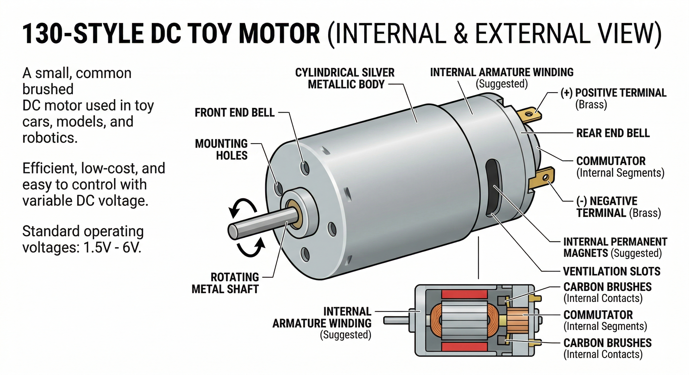

A DC Motor is a simple actuator that converts direct current (DC) electrical energy into mechanical energy (rotation). These small 130-style motors are common in toys, fans, and small hobby robots.

DC motors rely on electromagnetism and permanent magnets:
A DC motor consumes much more current than a single Arduino pin can safely provide (typically 400mA+). Connecting a motor directly to a digital pin will likely permanent damage your Arduino. Always use a Motor Driver (like the L298N) or a transistor (like the TIP120) to control a motor.
| Pin | Function |
|---|---|
| Terminal 1 | Positive or Negative (Polarity determines rotation direction). |
| Terminal 2 | Positive or Negative. |
In the OpenHW Studio emulator, the motor shaft will visually spin when it receives power. If you swap the positive and negative wires, you will see the motor rotate in the opposite direction!
This code assumes you are using a basic transistor or a single-channel driver to toggle the motor.
int motorPin = 9; // Connected to the base of a transistor or driver pin
void setup() {
pinMode(motorPin, OUTPUT);
}
void loop() {
// Turn the motor on at full speed
digitalWrite(motorPin, HIGH);
delay(2000); // Run for 2 seconds
// Turn it off
digitalWrite(motorPin, LOW);
delay(2000); // Stop for 2 seconds
// Using PWM for speed control
analogWrite(motorPin, 128); // Run at half speed
delay(2000);
}